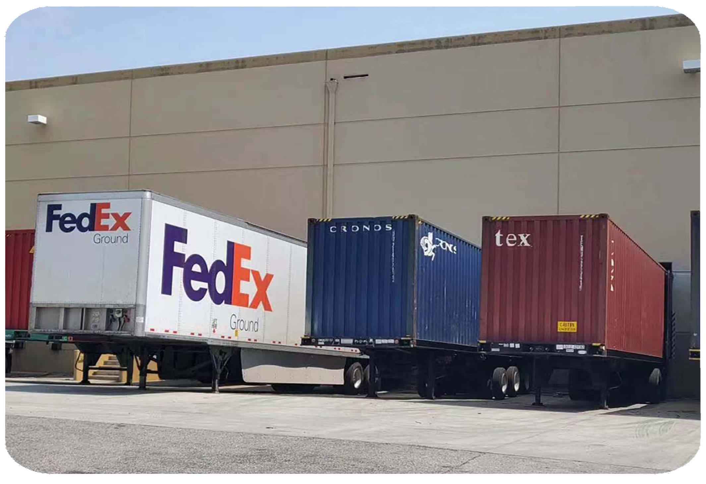
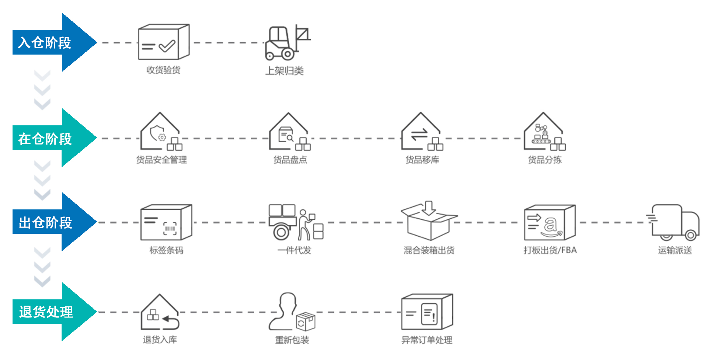

海外仓服务-仓储配送
一、海外仓仓储配送
极速海外仓成立于2015年，拥有七年海外仓运营经验并在北美建立了卓越的声誉。 目前已在美国本土美西、美东、美中自建面积20000㎡的海外仓。所有仓库由中美团队高效管理， 仓库内重点区域均覆盖摄像头，且配有完备的消防设施与警报系统，确保货物安全。
极速海外仓可提供海外仓储服务，包括入库存储、派送出库、 加工售后等。在尾程配送方面，极速与UPS、FedEx、USPS等快递深度合作，分仓就近发货，物流配送覆盖全美两日达。

二、极速仓储配送优势
-
 矩阵级仓群
美西、美东、美中四大仓库合理布局，平均分布
矩阵级仓群
美西、美东、美中四大仓库合理布局，平均分布 -
 配送时效短
多仓联动协同，分仓就近发货，尾程配送时效短
配送时效短
多仓联动协同，分仓就近发货，尾程配送时效短 -
 尾程价格优
多家本地物流服务商深度合作，折扣大渠道价格优
尾程价格优
多家本地物流服务商深度合作，折扣大渠道价格优 -
 直接对接仓库
所有仓库均自营仓库，在美华人操作，无沟通障碍
直接对接仓库
所有仓库均自营仓库，在美华人操作，无沟通障碍
三、仓储配送作业环节
仓储管理作业流程主要分为如下几个环节：

四、仓储配送常见问题
-
 海外仓储服务一般包括哪些内容？
海外仓储服务一般包括哪些内容？
-
 货物存放、托管，商品打包及退货处理，协调物流配送等。
货物存放、托管，商品打包及退货处理，协调物流配送等。
-
海外仓的仓储费用高吗？价格是怎么收费的？
-
海外仓的仓储费用一般有货物仓储费及产品处理费等，具体根据不同品类、产品大小重量及数量等因素来测算收取，
相比 FBA的仓储等服务价格更优，而且比国内直邮费用也低得多。
-
海外仓的配送时效如何？
-
不同海外仓的配送时效是不一样的，配送时效受多方面因素的影响，比如出库效率、配送距离以及配送渠道等。
就极速海外仓而言，现已能够实现两天配送至全美95%的人口。
-
好的海外仓通常具有哪些特征？
-
好的海外仓能帮您高效解决电商件仓储配送、FBA中转、一件代发、退仓换标等问题，您只需负责店铺运营，
其它诸如仓储物流问题可以交给海外仓帮您解决。
-
什么样的产品适合做海外仓？
-
海外仓并不只适合电商大卖家。小规模的卖家，如果销售的产品销量稳定、体量大，
或者卖家本身对于产品的物流时效要求高的话，也一样可以选择海外仓带来的便利和时效。